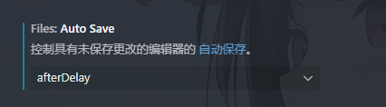
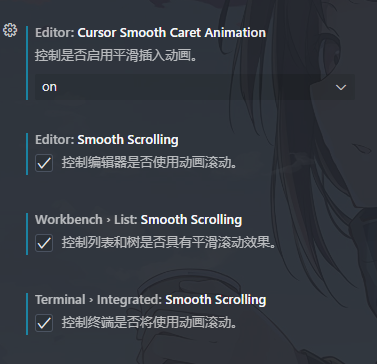
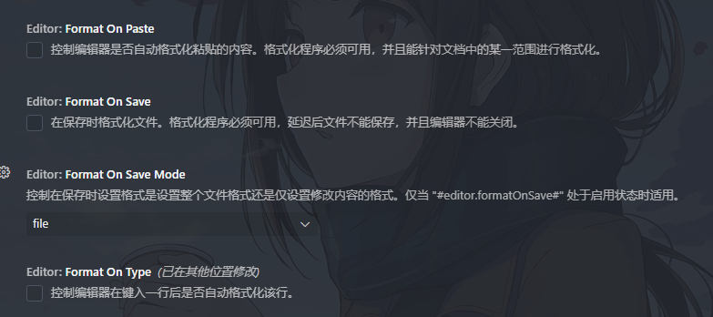
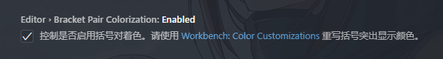
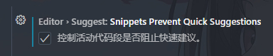
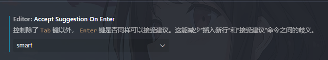
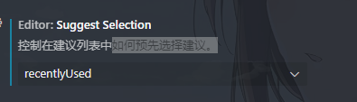
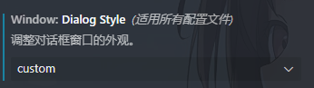
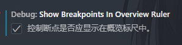
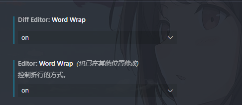

autoSave (自动保存文件)
auto guess(打开文件时猜测文件编码,新版已自动打开)

smooth(使操作更流畅,这个看自己喜好,可能会有些晕)
mouse wheel zoom(通过 ctrl+鼠标滚轮 控制字体大小,很实用)

formaton(文件格式化)
bracket(括号分颜色,新版已自动开启)
代码补全设置:
snippetsPreventQuickSuggestions
acceptSuggestionOnEnter

suggestSelection

dialogStyle(各窗口风格一致)

showBreakpointsInOverviewRuler(使断点显示在概览标尺中)

word wrap(自动折行)
插件
background(设置背景图)
选 中文作者
按介绍操作即可
其余插件请见原博客